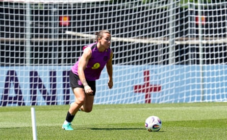

L eah Williamson said she had felt anxious in the buildup to England beginning their European title defence against France on Saturday night, the Arsenal defender having missed the 2023 World Cup after an anterior cruciate ligament injury.
“I’ve probably held some anxiety up until this moment just because I wanted to be here and I wanted to be here with the team and I wanted to experience another tournament with England,” said the Lionesses’ captain. “It’s special when you come to another country, to represent your country and just take everything in. It’s a bit different to England in 2022. I’m very excited but so much has changed, so I’m intrigued to come back and enjoy this tournament football.”
England look different from the team that beat Germany in the final in 2022. Millie Bright stepped back to protect her mental and physical health and Jill Scott, Ellen White, Rachel Daly, Mary Earps and Fran Kirby have retired completely or, in the case of the last two, retired from international duty. The mantra has been that this is a new England.
“The team has been a bit in transition, of course,” the manager, Sarina Wiegman, said, “and we absolutely cherish what we have done before, and we never forget it, and those are lifetime experiences for us and for our families and also for the fans. But you have to move on and you have to be on top. Things are changing very quickly, so we have to, too. We came together in February and we said: ‘It’s a new challenge.’ The approach was there anyway, but we called it the New England.”
France have changed too, but there are familiar faces everywhere, not least in the dynamic Chelsea forward Sandy Baltimore. How do you stop her? “Whisper in her ear,” said Lucy Bronze, her Chelsea teammate, with a grin. What do you say? “Nothing in English,” the England full-back said, still grinning.
Bronze, competing at her seventh major tournament having been part of every Euros and World Cup squad since 2013, has probably played with or against most players in Switzerland for Euro 2025.
Lucy Bronze is competing in her seventh major tournament.Photograph: Nick Potts/PA
There is one absent face in particular she will miss, though – that of the France centre-back Wendie Renard, who was dropped by the manager, Laurent Bonadei, along with Kenza Dali and Eugénie Le Sommer. It is a testament to Bronze’s competitive nature that she was unhappy about Renard’s omission.
“I want to play against Wendie,” she said of her former Lyon teammate. “I want to play against the strongest French team. I want Wendie to be playing, defending corners and I can jump over her and win the ball. Winning a header over Wendie Renard, that’s an achievement.”
Renard’s replacement as France’s captain, Griedge Mbock, another former Lyon clubmate of Bronze’s, is a doubt. The Paris Saint-Germain centre-back has been training separately after a calf injury. The potential stand-in, 21-year-old Alice Sombath, who has four caps, was also at Lyon with Bronze. “She’s probably got more maturity than people might give her credit for,” Bronze said.
France have an enviable attacking lineup that includes Kadidiatou Diani, Baltimore and Marie-Antoinette Katoto. “I think England have one of the best attacking lineups,” said Bronze. “The type of attackers France have got, we have quite similar, and as defenders we defend against that every day in training.”
Bronze has played in some of the best teams in the history of women’s domestic football, so where does England’s front three, likely to be drawn from Alessia Russo, Lauren Hemp, Beth Mead, Lauren James and Chloe Kelly, rank in terms of providing that top-level test of a defender in training?
“I’d say it’s similar to those kinds of teams that I’ve been in,” said Bronze. “I might be playing up against Hempo for 30 minutes and then it’s LJ, then it’s Chloe; it’s just non-stop, and they’ve all got such different attributes. Even someone like Michelle [Agyemang], who is relatively young, just runs into people and bodies them because she’s so strong.”
James is ready to play more minutes, said Wiegman, after returning from a hamstring injury as a substitute against Jamaica last weekend. “I won’t give you the lineup but she played 30 minutes last week so she can play more than that,” the manager said.
After France, England face the 2017 European champions, the Netherlands, on Wednesday before completing the group stage against Wales. It has been referred to as the group of death. There is little room for error.
Bronze said it was “a good and a bad thing” having to start against a serious contender. “If we lose that game, everyone says it’s the worst; if we win that game, it’s the best,” she said. “We just try to look at the positives: the fact that we get to test ourselves against the good teams straight away. There’s no surprises going through the tournament. We know the standard that you have to be at. When you get to these kinds of tournaments, you want to play in the big games against the best players. Why not have it in your first game? It makes it more exciting.”